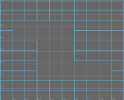

使用这些选项可设置在选择时发生的情况。
设置(Settings)
- 添加分段(Add Divisions)
-
“指数”(Exponential)和“线性”(Linear)平滑选项都是均匀平滑，但它们对结果拓扑提供不同的控制。例如，“指数”(Exponential)可选择保持软边和硬边，而“线性”(Linear)可选择更好地控制结果面的数量。
平滑后，可通过更改“polySmoothFace”节点上的“方法”(Method)属性在这两种方法之间切换。
指数控制(Exponential Controls)
将“添加分段”(Add Divisions )设置为“指数”(Exponentially)后，下列选项可用。
- 分段级别(Division levels)
-
使用滑块或在“分段级别”(Division levels)字段中输入数字可增加或减少 Maya 执行平滑操作的次数。同时也会增加或减少对象的平滑度。
“分段级别”(Divisions levels)滑块的范围为 1 到 4，但是可以在“分段级别”(Divisions levels)字段中手动输入值 5 和更大值。

- 细分类型(Subdivision Type)
-
允许您选择用于平滑网格的算法。根据您选择的“细分类型”(Subdivision type)的不同，会显示不同的选项。
- Maya Catmull-Clark
-
使用 Maya 的 Catmull-Clark 算法实施平滑网格的面。
有关“Maya Catmull-Clark”选项的详细信息，请参见 Maya Catmull-Clark。
注： 在 Maya 2014 和更早的版本中，“Maya Catmull-Clark”是默认的细分类型。 - OpenSubdiv Catmull-Clark
- （默认）使用 Maya 的 OpenSubdiv 库实施平滑网格的面。请参见 OpenSubdiv 概述。
“OpenSubdiv Catmull-Clark”对网格面应用统一的细化方案。
有关“OpenSubdiv Catmull-Clark”选项的详细信息，请参见 OpenSubdiv Catmull-Clark。
OpenSubdiv Catmull-Clark
只有当选择的“细分类型”(Subdivision type)为“OpenSubdiv Catmull-Clark”时，以下选项才可用。
- 顶点边界(Vertex Boundary)
- 控制如何对边界边和角顶点进行插值。
重要： 当使用“OpenSubdiv Catmull-Clark”细分类型时，角为两个边相交的网格区域。
- 锐边和角(Sharp edges and corners)
- （默认）边和角在平滑后保持为锐边和角。
在以下示例中，边和双边角均为尖锐。

- 锐边(Sharp edges)
- 边在平滑后保持为锐边。角已进行平滑。
在以下示例中，边为锐边，但双边角已进行平滑。

- UV 边界平滑(UV Boundary Smoothing)
- 控制如何将平滑应用于边界 UV。
重要： 当使用“OpenSubdiv Catmull-Clark”细分类型时，角为两个边相交的网格区域。
- 无(None)
- 不平滑 UV。
- 保留边和角(Preserve Edges and Corners)
- 平滑 UV。边和角在平滑后保持为锐边和角。
在以下示例中，边界边和双边角均为尖锐。

- 保留边(Preserve Edges)
- 平滑 UV 和角。边在平滑后保持为锐边。
在以下示例中，边界边为锐边，但双边角已进行平滑。

- Maya Catmull-Clark
- （默认）启用时，平滑不连续边界上的顶点附近的面变化数据（UV 和颜色集）。不连续边界上的顶点将按锐化规则细分（对其插值）。
注： “Maya Catmull-Clark”会与“Maya Catmull-Clark”控件中的“平滑内部”(Smooth Internal)选项产生相同的结果。
- 传播 UV 角(Propagate UV Corners)
- 启用后，原始网格的面变化数据（UV 和颜色集）将应用于平滑网格的 UV 角。
- 平滑三角形(Smooth Triangles)
- 启用时，会将细分规则应用到网格，从而使三角形的细分更加平滑。“平滑三角形”(Smooth Triangles)默认情况下处于禁用状态。
- 折痕方法(Crease Method)
- 控制如何对边界边和顶点进行插值。
- 正常(Normal)
- （默认）不应用折痕锐度平滑。
- Chaikin
- 启用后，对关联边的锐度进行插值。在细分折痕边后，结果边的锐度通过 Chaikin 的曲线细分算法确定，该算法会产生半锐化折痕。此方法可以改进各个边具有不同边权重的多边折痕的外观。
Maya Catmull-Clark
只有当选择的“细分类型”(Subdivision type)为“Maya Catmull-Clark”时，以下选项才可用。
- 边界规则(Boundary rules)
- 通过该选项，可以设置在平滑网格时要将折痕应用于边界边和顶点的方式。
- 旧版(Legacy)
- 不将折痕应用于边界边和顶点。
- 折痕全部(Crease all)
- （默认设置）在转化为平滑网格之前为所有边界边以及只有两条关联边的所有顶点应用完全折痕。
- 折痕边(Crease edges)
- 仅为边应用完全折痕。
- 连续性(Continuity)
-
此处输入的值可确定平滑度。
- 平滑 UV (Smooth UVs)
-
对 UV 应用与顶点相同的平滑操作。默认情况下，“平滑 UV”(Smooth UVs)处于启用状态，这样可以为 UV 提供更好的结果。
如果要保持与在旧版 Maya 中创建的场景的兼容性，或者 UV 无需进行平滑但您希望提高性能，则禁用“平滑 UV”(Smooth UVs)。
- 传播边的软硬性(Propagate Edge Hardness)
-
将边的硬度值从原始网格上的任何硬化边复制到平滑网格上关联的新边。默认设置为禁用。
- 映射边界(Map borders)
-
控制“平滑 UV”(Smooth UVs)处于启用状态时如何平滑边界。
- 平滑全部(Smooth all)
-
平滑所有 UV 边界。
- 平滑内部(Smooth internal)
-
平滑内部边界。这是默认设置。
- 不平滑(Do not smooth)
-
不平滑边界。
- 保留(Preserve)
-
指定平滑时哪些组件不受影响。
- 几何体边界(Geometry borders)
-
启用该选项（默认）时，将保留网格的边界边的属性。它控制 PolySmoothFace 节点的“保持边界”(Keep Border)属性。
- 选择 边界(Selection borders)
-
启用该选项（默认）时，将保留设定选定面和未选定面的边界的边的属性。
- 硬边(Hard edges)
-
保留任何手动硬化或软化的现有边的属性。如果已更改边的硬度或柔和度（或），则启用此选项以保持这些设置。
- 细分(Tessellation)
-
启用该选项，以便更改历史节点时，平滑节点不会重做细分，而只重新定位已生成的顶点。
线性控制(Linear Controls)
将“添加分段”(Add Divisions)设置为“线性”(Linearly)时，以下选项可用。“线性”(Linear)平滑方法可以更好地控制因平滑而产生的面数，尤其是每个面的分段数属性。
请勿在其面具有四个以上边的曲面上使用线性方法。否则，结果平滑曲面将不平坦。在执行平滑之前，先使用或。
- 分段级别(Division levels)
-
Maya 执行平滑的次数。该值越大，对象就越平滑，且生成的面也越多。
注：同时更改“分段级别”(Division levels)和“每个面的分段数”(Divisions per face)设置可在网格上创建大量的面，导致 Maya 应用程序的交互性能降低。
- 每个面的分段数(Divisions per face)
-
以比“分段级别”(Division levels)小的增量增加面数。使用该选项，可以更轻松地实现平滑度与低多边形数之间的平衡。
划分每个面会使面数增加。Maya 通过分割现有边划分每个面。您设置的值是 Maya 执行分割的次数。如果将“每个面的分段数”(Divisions per face)设置为 1，则每个边将分割一次，如果值为 2，则每个边将分割两次，依此类推。
- 推动强度(Push strength)
-
控制结果平滑网格的总体积。提高值可向外缩放网格，而降低值可将其缩回。默认设置为 1。
- 圆度(Roundness)
-
通过缩放围绕原始面中心的顶点在曲面中创建凸起。提高值可向外缩放这些顶点，而降低值可将其缩回。要使“圆度”(Roundness)产生效果，“推动强度”必须大于零。
注： 和这两种方法输出多边形顶点的顺序不同。如果需要执行要求相同拓扑的操作（例如，使用“融合变形”(Blend Shape)时），则可能希望使用相同的平滑工具来平滑多边形网格，以避免出现异常的结果。